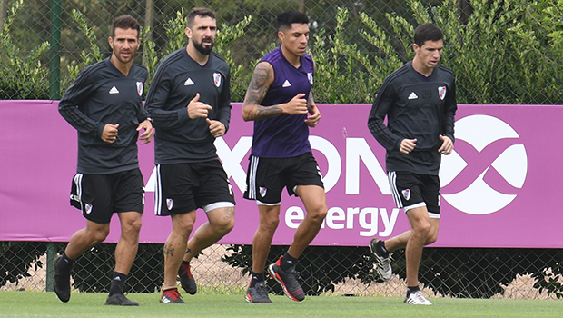

El cuerpo técnico dio a conocer a los jugadores que viajarán a esta provincia para enfrentar a Argentino de Merlo, el miércoles, en el Estadio Padre Martearena.
La tarde en River Camp comenzó con una entrada en calor con pelota y continuó con ejercicios físico-tácticos y trabajos de definición.
Por otro lado, Milton Casco e Ignacio Scocco se movieron de manera diferenciada.
NÓMINA DE JUGADORES
Próximo entrenamiento
Martes 16/4, a las 11 hs., en el Estadio Monumental. Será a puertas cerradas.
Viaje a Salta
Martes 16/4, a las 18 hs., en vuelo chárter desde aeroparque.
Hospedaje en Salta
Hotel Sheraton.
Regreso a Buenos Aires
Una vez finalizado el partido, en vuelo chárter, con destino a aeroparque.
· 28/04/2019
Copa de la Superliga: River empató en la ida
ante Aldosivi
· 26/04/2019
Los convocados para el debut en la Copa de la
Superliga
· 24/04/2019
River ganó en Chile y clasificó a octavos de
final
· 17/04/2019
Copa Argentina: River goleó en Salta y dio el
primer paso